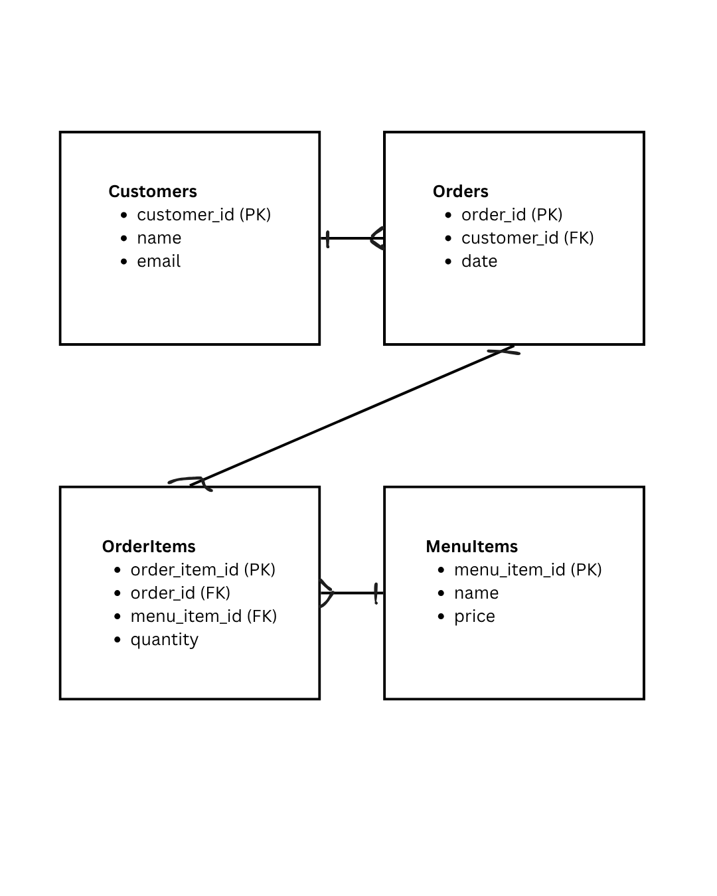

Project Developer
Xeniya Kyrychenko: Designed and developed the entire website, including layout, navigation, CRUD pages, data visualizations, and Botpress chatbot integration.
Project Overview
This project is a static prototype of a coffee shop management system. It is designed to help manage customer orders, menu items, and sales data. The system includes CRUD functionality, interactive charts, and a chatbot to simulate real customer interactions in a coffee shop environment.
Logical Data Model
The data model supports the structure of the coffee shop system by organizing customers, orders, menu items, and order details. One customer can place many orders, and each order can include multiple items. Menu items can also appear in many different orders, forming one-to-many relationships within the system.
